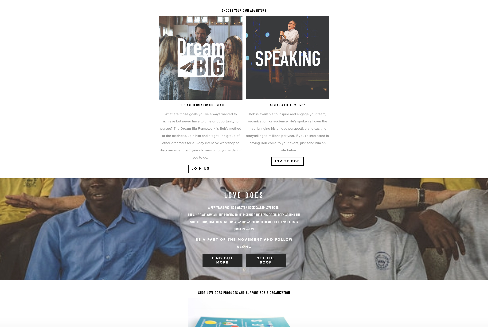
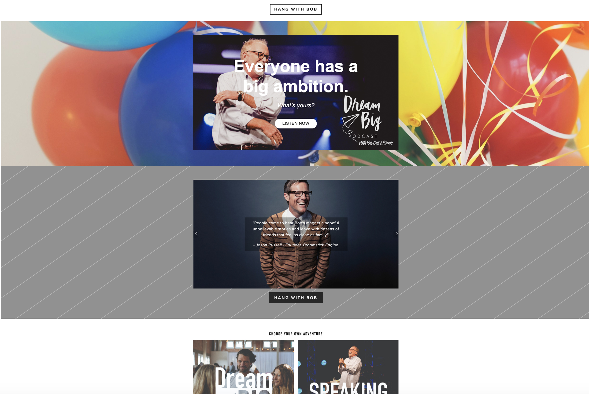
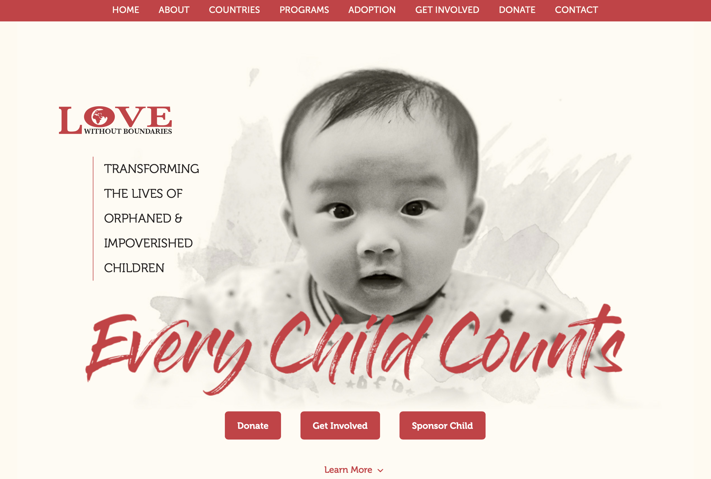
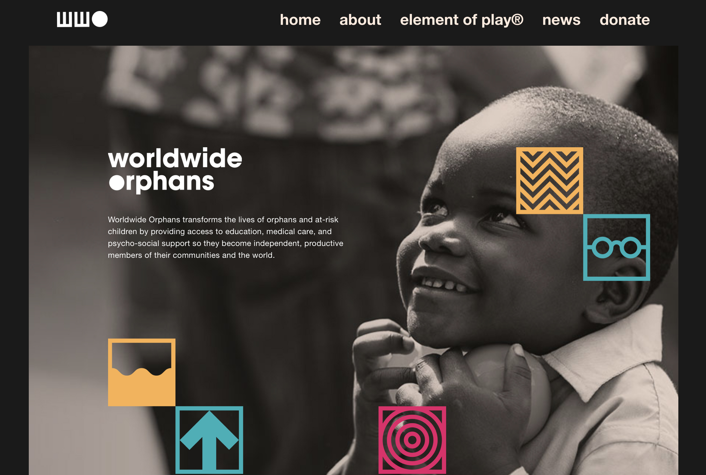
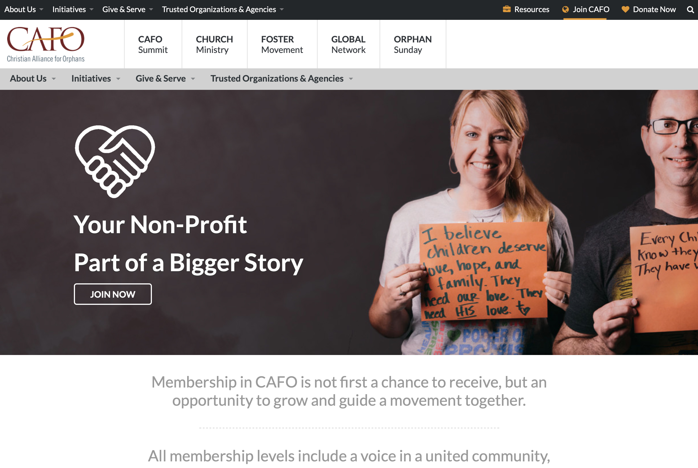
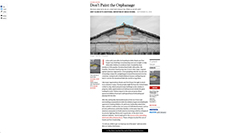

Research
I started conducting primary research on my client Bob Goff, and then secondry research on other organizations similar to Bob Goff's plan.
Primary Client Research
Research from Bob Goff's Website
Bob Goff's goal and mission is to show people how to love and how to be loved greater. He has written multiple books, created a workshop, and founded a non-profit orignation.Home
This section includes 7 pages ranging from dream big workshop, speaking (how to get Bob Goff to speak at your conference), the team that helps run all the details for Bob Goff's mission, his podcasts, the shop, love does which is his non-profit organization, and follow, which are all of the social media plantforms you can find Bob Goff.
1st Mission Statement

"Live in Grace, Walk in Love." Bob listed three ways to get connected:
- Meet Bob!
- Change Up Your Life
- Be Available.
2nd Mission Statement

"Chose Your Adventure." Bob's listed two ways to chose your adventure:
- Get Started on Your Big Dream.
- Spread a Little Whimsy.
Love Does.
About his Book. Bob listed two things about his book.
- Find Out More.
- Get the Book.
Summary
From this primary client research, I learned the goal and mission behind my client Bob Goff, which is extremely important aspect of Human Centered Design. I also learned about their target audience and main users of Bob Goff's website. This will end up influence my call to action.
Secondary Research
 For my secondary research, I wanted to look at other non-profit organizations that goals are to help orphans. Love without Boundaries is an organization, who displays children in need of a sponsor. They also have a way to donate money towards their non-profit. Users can donate however much they want. They statement on their homepage, "Love Without Boundaries is an authentic international charity that provides hope and healing to orphaned and vulnerable children, and their underserved communities, through its education, nutrition, medical, and foster care programs."  Worldwide Orphans is another organization that helps orphans around the world. Their mission statments is "Worldwide Orphans transforms the lives of orphans and at-risk children by providing access to education, medical care, and psycho-social support so they become independent, productive members of their communities and the world."  CAFO standards for Christian Alliance for Orphans. Their huge drawl for their non-profit is "Your Non-Profit, Part of Bigger Story." They want to show people they have an impact on the world. My Secondary Research showed me what Bob Goff's website needs to display to truly draw users into helping with his non-profit organization.

When conducting my secondary research, I searched for news articles talking about the needs of orphans and different companies trying to formulate a non-profit. It is honeslty sad how many different non-profit organzations are out there trying to help orphans. Most of them do not dispaly clear direction on the non-profit nd how to donate or help the non-profit. Client Number 1: I started off asking Mr. Marks why he was drawn to Bob Goff’s books and mission statement. He told me he thinks that the way Bob Goff’s writes about his life and journey about being a Christian draws people in and shows people what it looks like to have a gospel centered life. The next question I asked him was if he thinks people know that Mr. Goff has an non-profit organization connected to his book “Love Does.” He told me when he tells people to read the book some people know everything that Mr. Goff does and others have no idea who his and what he stands for. I think asked if he has been on the website for Bob Goff. He said he has been on there multiple times and then I asked what was he looking for. Mr Marks told me he was looking for the shop to buy more copies of both of his books. I asked him how long he thought it took him to find both books and he said it probably took him around five minutes total to find and purchase the books. Once I found out what Mr. Marks looks for on Mr. Goff’s website, I then asked him if he has seen anything on the front page of the website about the non-profit and he said, “no, I have to really search for the mission statement and different aspects of the non-profit.” Finally, the last question I asked was what does he want to see when he comes to Bob Goff’s website. Mr. Marks said it would be easier if it was clearly explained on the homepage where everything is located.
Summary: After talking with Pastor Marks, I realized that many people just want to purchase a book and not look for the non-profit because there is no information of the non-profit on the home page. My goal is to help fix this problem and make the overall design more organized for the viewers. Bob Goff values his non-rpfot and it needs to be a higher priority on the home page. Client Number 2:
I asked Amanda why she enjoys Bob Goff and she said she enjoys reading his books. She likes how he connects his real life stories to the gospel. I asked her if she knew he had a non-profit and she said she knew he had one before reading his book, but does not know a ton of information about it and has not found a ton of information about it. I asked her if she used his website and she said she tried to and got frusterated becuase she could not find what she was looking for. I asked her what was she looking for when she was on the website. She was researching places he was speaking at and the dates for his next conference he was attending. Once I knew what she was looking for, I asked her how long it took her to figure out where he was speaking. She repsonded with. "I never found out where he was speaking." Finally, I asked her what she would like to see on his website. She replied saying, "I think it would be interesting to see stories of different families and children he has helped through his non-profit organization to draw in more people to donate and help. It will allow Bob Goff to be even more personal with his users."
Summary: After talking to Amanda Stone, I realized Bob Goff has completely no organization within his site and users get completely lost when trying to find simple inforamation,like dates and places where he is speaking at next. Love without Boundaries.
Worldwide Orphans
CAFO
Summary
Current News
Interviews
Client Interview
I emailed Bob Goff and everyone on staff. They told me they do not have time right now to let me ask them some questions.
User Interview